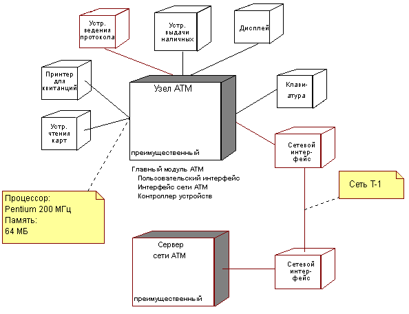

| Концепция: Представление Развертывание |
 |
|
| Связанные элементы |
|---|
Для общего представления физического распределения системы через набор обрабатывающих узлов служит архитектурное представление, называемое представление Развертывание, используемое в потоке операций анализа и проектирования. Представление Развертывание (одно из пяти, показанных ниже) показывает распределение процесса по узлам в системе, включая физическое распределение процессов потоков. Представление Развертывание уточнятся на каждой итерации.  Представление Развертывание показывает физическое распределение обработки в системе. Существуют четыре дополнительных представления - представление вариантов использования, используемое в потоке операций требований, логическое представление, представление процессов и представление реализации. Последние три используются в потоке операций анализа и проектирования. Архитектурное представление документировано в документе Архитектура программного обеспечения. Можно добавлять представления, например, представление Защита для изображения других аспектов архитектуры программного обеспечения. По сути, архитектурное представление - это упрощенное представление моделей, служащее для того чтобы акцентировать внимание на важных характеристиках, оставив в стороне детали. Архитектура - это важное средство для улучшения качества любых моделей, создаваемых во время разработки системы. |
© Copyright IBM Corp. 1987, 2006. Все права защищены.. |